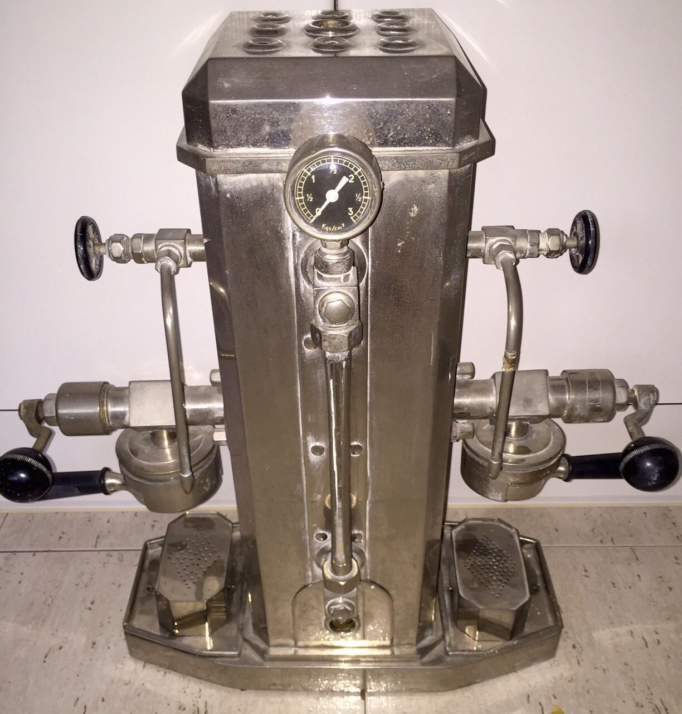

Our Humble Beginnings
It all started way back when a few of our buddies decided to start having meet-ups every Saturday to play various classic games — Dungeons & Dragons, Magic: The Gathering, Gauntlet Legends — at Jim's house. Jim had an old broken espresso machine sitting in his garage that his parents had left. After a few weeks, I started tinkering with it and got it working again. We experimented a bit and eventually mastered the use of the ancient relic. The brew started coming out so well, that every started to tell their friends about it. Before you know it, more people started coming to the meet-ups, and the sad part was, it was mostly for the coffee.
Venturing into the Unknown
So after the gatherings grew too large to be hosted at Jim's house, we decided to get a small unit out of the old business park. Big mistake! Apparently, business proffesionals like coffee too. And again, we became a little too cramped for comfort. Which brings us to our new home, a generous space with a super relaxed atmosphere. More than enough room for all of our patrons to loiter as long as they would like!
Time Warp
Oooh, Aaaah!